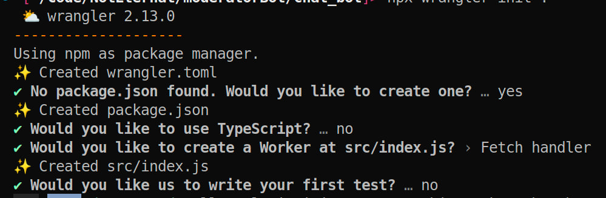

Table of contents
Why do you want it?
Are you looking for an easy and profitable way to earn money online? Look no further than creating a Telegram bot with ChatGPT! This powerful tool allows you to create your own chatbot that can engage with users and provide valuable information. In this guide, we'll walk you through the process of creating a Telegram bot with ChatGPT and show you how to monetize it. Introduction Before we get started, let's go over what a Telegram bot is and why they're so popular. A Telegram bot is an automated program that can interact with users on the Telegram messaging app. These bots can be used for a variety of purposes, such as customer service, news alerts, or even entertainment.
ChatGPT is a language model that can generate human-like responses to natural language queries. By combining ChatGPT with a Telegram bot, you can create a chatbot that can answer questions and provide information to users.
Initial setup
First of all you need to set up a Telegram bot account, create an OpenAI account and a Cloudflare account. To do this, follow these steps:
-
Open the main bot responsible for bot creation:
BotFather. Start a chat with
the BotFather and follow the instructions to create a new bot
account. Once you've created the bot account, you'll be given a
token. It looks like this:
6079022061:AAFWgW7O2_2Hxp-Bk7Q3TgFf_ie3aectUfc. Keep this token safe and in secret, as you'll need it to connect your bot to ChatGPT. Next click on the bot link in the beginning of a BotFather message and press start button. Send any message to that chat. Now you can receive a chat ID for interacting in that chat. Open this link in a browser (replace <TOKEN> with your bot token):https://api.telegram.org/bot<5818750440:AAEF4tY2wlSUv3S0ymCaAFpmgTKNDJw9g38>/getUpdatesCopy chat ID from the result. It looks like:1015004128 -
The next step is to set up ChatGPT. Go to the OpenAI platform
and sign up for an account. Once you've signed up, create a new API key. It looks like this:
sk-czw4SSZP2JoDGUoq9VqeW3BlbxFJmxIm3RMOk19BLjgFmbXV. Save this token in a secret place. - Create a new Cloudflare account. Go to the Cloudflare site and sign up for an account.
Development
Now that you've set up both your
Telegram bot account and ChatGPT, it's time to connect them.
Firstly you need to install Node.js.
The major version in this guide is 18. With Node.js installation you will get NPM.
Install a CLI for workers from the command line interface:
npm install -g wrangler
Create a new folder somewhere in your system. We name it chat_bot.
Open your folder and initialize your project:
npx wrangler init .
Answer on all all questions like this:

Open package.json file and change a start script to
"start": "wrangler dev --local",
Start your worker with a command:
npm run start
Open http://127.0.0.1:8787 in your browser. You should see the message:
"Hello World!".
Now we can start to write a new code for our bot. First of all let's create different files for different sources and actions. Create files these files inside of the src folder:
- constants.js
- telegram.js
- openai.js
export const TELEGRAM_API_DOMAIN = "https://api.telegram.org";
export const OPENAI_API_DOMAIN = "https://api.openai.com";
Now put code for Telegram:
import { TELEGRAM_API_DOMAIN } from "./constants";
// Interact with a Telegram API
const send = async (message, token, context) => {
return await fetch(`${TELEGRAM_API_DOMAIN}/bot${token}/sendMessage`, {
method: "POST",
headers: {
"Content-Type": "application/json",
},
body: JSON.stringify({
...context,
text: message,
}),
});
};
export const sendMessage = async (message, botToken, chatContext) => {
if (message.length <= 4096) {
return await send(message, botToken, chatContext);
}
const limit = 4000;
for (let i = 0; i < message.length; i += limit) {
const msg = message.slice(i, i + limit);
await send(`\n${msg}\n`, botToken, chatContext);
}
return new Response("MESSAGE BATCH SEND", { status: 200 });
};
And fill index.js with this code:
import { sendMessage } from "./telegram";
const CHAT_CONTEXT = {
chat_id: 1015004128,
reply_to_message_id: null,
parse_mode: "HTML",
};
const handleRequest = (token, context) => {
return sendMessage("It works", token, context);
};
const botToken = "6079022061:AAFWgW7O2_2Hxp-Bk7Q3TgFf_ie3aectUfc";
export default {
async fetch(request) {
return handleRequest(botToken, CHAT_CONTEXT);
},
};
Now start your bot (or reload the local page) and check the results.
You should receive a message "It works" in that chat with your bot.
At this point you can send messages from a worker to your bot.
Let's move on and add some command to your bot. Now we need to connect our bot with Telegram, because at this moment we can send information to Telegram, but we cannot react on bot requests. For this we have to set webhook. In simple word - tell Telegram which URL will be connected and answer on our bot commands. Add this code to telegram.js:
...
TODO: add code for requests to OpenAI API
TODO: add code for handling chat messages (send it to ChatGPT)
TODO: add description about monetization
Marketing
Step 1: Monetize Your Bot Once your bot is up and running, it's time to start making money with it. Here are a few ways you can monetize your Telegram bot:
- Charge users for premium content or services.
- Accept donations from users who appreciate your bot. For example: Buy Me a Coffee
- Use affiliate marketing to earn commissions on products or services you recommend.
Step 2: Promote Your Bot The final step in creating a successful Telegram bot is to promote it to your target audience. Here are a few ways to get the word out:
- Share your bot on social media.
- Reach out to influencers in your niche and ask them to promote your bot.
- Use paid advertising to reach a wider audience.
Conclusion
Creating a Telegram bot with ChatGPT is a simple and effective way to earn money online. By following the steps outlined in this guide, you can create a bot that engages with users, provides valuable information, and generates income. So why not give it a try?
FAQ
How much does it cost to create a Telegram bot with ChatGPT?
Creating a Telegram bot with ChatGPT is free, but you may incur costs for hosting and other services.
How long does it take to create a Telegram bot with ChatGPT?
The time it takes to create a Telegram bot with ChatGPT depends on your technical skills.